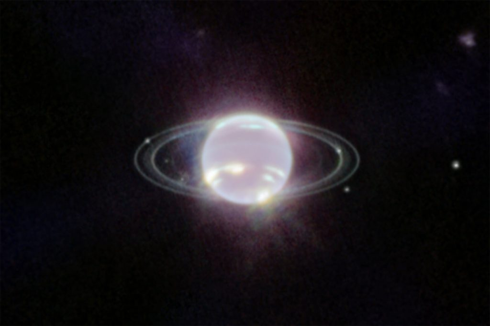
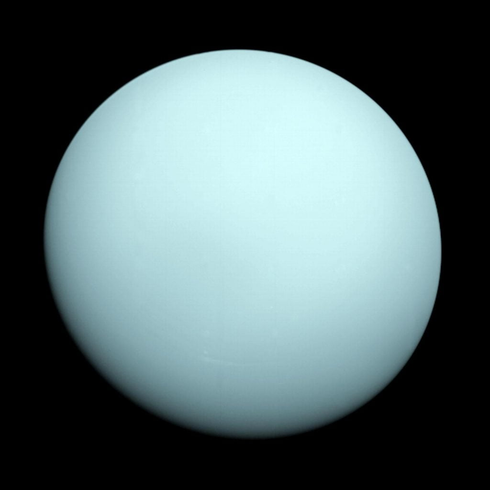
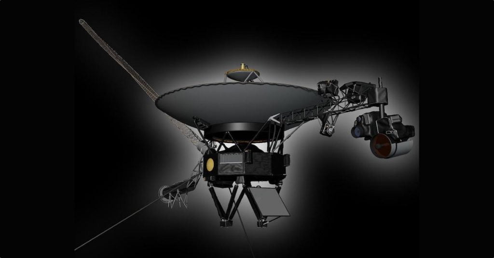
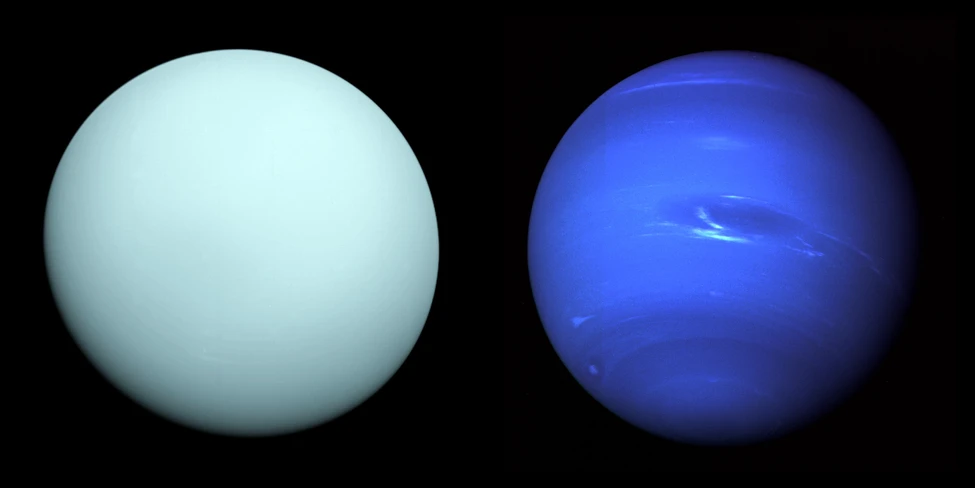
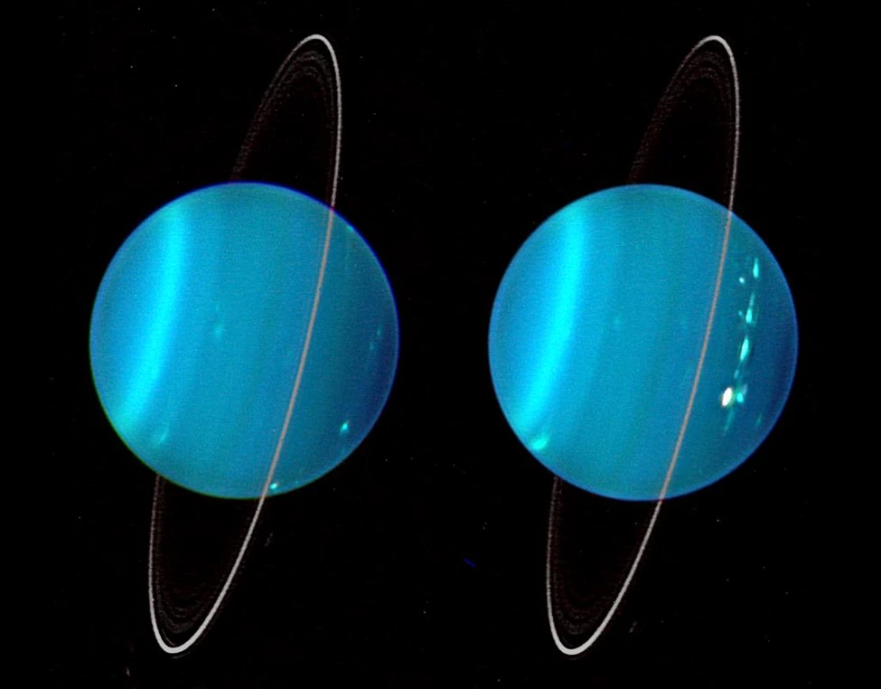

ယူရေးနပ်စ် နဲ့ နက်ပ်ကျွန်း ဂြိုဟ်တွေဟာ နေကနေ အလွန် ဝေးကွာတဲ့ အရပ်ကနေ ပတ်နေကြတာ ဖြစ်ပါတယ်။ ဒီဂြိုဟ်တွေဟာ ကမ္ဘာမြေလို ကျောက်သားတွေနဲ့ ဖွဲ့စည်းထားကြတာ မဟုတ်ပါဘူး။သူတို့ကို ဟိုက်ဒြိုဂျင်နဲ့ ဟီလီယံ ဓါတ်ငွေ့တွေ အပါအဝင် အခြား ဓါတ်ငွေ့တွေနဲ့ ဖွဲ့စည်းထားတာ ဖြစ်ပါတယ်။
ဆက်စပ်ဆောင်းပါး – နေအဖွဲ့အစည်း ထဲက အအေးဆုံး ဂြိုဟ်
ဒီဂြိုဟ်တွေရဲ့ လေထုကို ဟိုက်ဒြိုဂျင် နဲ့ ဟီလီယံ ဓါတ်ငွေ့တွေနဲ့ အဓိက ဖွဲ့စည်း ထားပါတယ်။ ဒီ လေထု အလွှာရဲ့ အောက်မှာတော့ ရေ၊ အမိုးနီးယား ၊ မိသိန်း နဲ့ အခြားဓါတ်ငွေ့တွေ အရည်အဖြစ် တည်ရှိနေတဲ့ ဓါတ်ငွေ့ ပင်လယ်ကြီး ရှိနေပါတယ်။
ဒီ ဓါတ်ငွေ့ ပင်လယ်ကြီး ထဲမှာ မျောနေ ကြတာကတော့ မြောက်များလှ စွာသော စိန်တုံး စိန်ခဲ တွေပဲ ဖြစ်ကြပါတယ်။
သိပ္ပံ ပညာရှင် တွေဟာ ဒီ ရေခဲဂြိုဟ် ကြီးတွေရဲ့ အပေါ်ယံ အကာထဲက စိန်တွေဟာ စိန်မိုးတွေ အဖြစ်နဲ့ ဂြိုဟ်ရဲ့ ဗဟိုက အူတိုင် ပေါ်ကို ရွာကျနေ တယ်လို့ အစဉ်အဆက် ယူဆခဲ့ ကြပါတယ်။

အရင်ကတော့ သိပ္ပံ ပညာရှင် တွေဟာ ယူရေးနပ်စ် နဲ့ နက်ပ်ကျွန်း ဂြိုဟ်နှစ်စင်း လုံးမှာ စိန်မိုးတွေ ရွာကျနေမယ်လို့ ယူဆခဲ့ ကြပါတယ်။ ဒါပေမယ့် အခုနောက်ဆုံး ပြုလုပ်တဲ့ သုတေသန အရ ယူရေးနပ်စ် ဂြိုဟ်ပေါ်မှာ စိန်မိုးတွေ ရွာနေတယ် ဆိုတာနဲ့ ပါတ်သက်လို့ သံသယ ဖြစ်စရာတွေ ပေါ်လာပါတယ်။
ယခု သုတေသန စာတမ်းကို ဖေဖော်ဝါရီ ၂၇ ရက်နေ့ထုတ် Nature Communications သုတေသန ဂျာနယ်မှာ တင်ပြထားတာ ဖြစ်ပါတယ်။ ဒီ သုတေသန စာတမ်းအရ နက်ပ်ကျွန်းဂြိုဟ်ပေါ်က ပတ်ဝန်းကျင် အခြေအနေ တွေဟာ စိန်တွေ ဖြစ်ပေါ်ဖို့ လုံလောက်ပေမယ့်လဲ ယူရေးနပ်စ် ဂြိုဟ်ပေါ်က ပတ်ဝန်းကျင် အခြေအနေ တွေကတော့ စိန်တွေ ဖြစ်ပေါ်ဖို့ လိုအပ်ချက်ကို ပြည့်မှီနိုင်မှာ မဟုတ်ဘူးလို့ ဆိုပါတယ်။

ဆက်စပ်ဆောင်းပါး – ယနေ့ ၄၅ နှစ် ပြည့်တဲ့ ဗွိုင်ယေဂျာ အာကာသယာဉ်
“ယူရေးနပ်စ် နဲ့ နက်ပ်ကျွန်း အရွယ် ဂြိုဟ်တွေဟာ မစ်ကီးဝေး ဂလက်ဆီ ထဲမှာ အတော်လေး ပေါပေါများများ ရှိပါတယ်။ ဒါ့ကြောင့် ဒီဂြိုဟ်တွေ အထဲမှာ ဘာဖြစ်နေလဲ ဆိုတာ သိရှိ နားလည် ခြင်းဟာ နေအဖွဲ့အစည်း ပြင်ပက ဂြိုဟ်တွေကို လေ့လာရေးမှာ အထူးပဲ အရေးပါပါတယ်” လို့ ဇူးရစ် တက္ကသိုလ် (University of Zurich) က ပြင်ပဂြိုဟ် သုတေသန ပညာရှင် တစ်ဦးဖြစ်သူ ရာဗစ် ဟဲလဒ် (Ravit Helled) က ရှင်းပြပါတယ်။
မိုးကောင်းကင်ထဲမှာ စိန်တွေ ရှိနေသလား
၁၉၈၀ ပြည့်လွန် နှစ်တွေက ဗွိုင်ယေဂျာ အမှတ် ၂ (Voyager 2) အာကာသယာဉ် နက်ပ်ကျွန်းဂြိုဟ် နားက ဖြတ်ပျံသွားတဲ့ အချိန်မှာ နက်ပ်ကျွန်းဂြိုဟ်ဟာ သူ့ရဲ့ အပူချိန်ကြောင့် ကိုယ်ပိုင် အလင်းရောင် တောက်ပနေတယ် ဆိုတာကို သတိပြုမိ ခဲ့ကြပါတယ်။ဒါပေမယ့် ယူရေးနပ်စ် ကတော့ ကိုယ်ပိုင် အလင်းရောက် ထွက်ပေါ်လာခြင်း မရှိပဲ နေက အလင်းရောင် ကိုပဲ ရောင်ပြန်ဟပ်ပေး နေတာကို တွေ့ကြ ရပါတယ်။

ဩစတြီးယား နိုင်ငံ သိပ္ပံနှင့် နည်းပညာ တက္ကသိုလ် (Institute of Science And Technology Austria) က သုတေသီ Bingqing Cheng နဲ့ အဖွဲ့ရဲ့ ယခု တင်ပြတဲ့ စာတမ်းအရ ဒီလို အလင်းရောင် ထွက်ပေါ်မှု ကွာခြားရတာဟာ ဒီ ဂြိုဟ်တွေ အတွင်းက စိန်မိုးတွေ ရွာကျမှုနဲ့ ဆက်စပ် နေမယ့်လို့ ဆိုပါတယ်။
စိန်တွေ ဂြိုဟ်ရဲ့ အပေါ်ယံ အကာ ထဲမှာ ပြုတ်ကျနေ ချိန်မှာ သူတို့မှာ သိုလှောင်ထားတဲ့ ဆွဲအား စွမ်းအင် (Gravitational energy) ကို အပူအဖြစ် ပြန်လည် ထုတ်လွှတ် ပေးပါတယ်။
ဒီလို ထုတ်လွှတ်တာက ဘာနဲ့ တူလဲဆိုတော့ ဥက္ကာခဲတွေ လေထုထဲ ဝင်ရောက်ချိန်မှာ လောင်ကျွမ်းသွားပုံနဲ့ တင်စား ပြောလို့ ရပါတယ်။ ဥက္ကာခဲ တွေလို လောင်ကျွမ်းသွားတာ မဟုတ်ပေမယ့် ဒီ စိန်တုံးတွေက ဓါတ်ငွေ့ရည် တွေနဲ့ ပွတ်တိုက် မိချိန်မှာ အပူ ထွက်ပေါ်လာပြီး ဒီ အပူက အလင်းရောင် ထွက်ပေါ်လာတာ ဖြစ်ပါတယ်။

ဒီ သတ်မှတ် အပူချိန် နဲ့ ဖိအား ရမယ်ဆိုရင် မိသိန်း ဓါတ်ငွေ့တွေ ထဲက ကာဗွန် နဲ့ ဟိုက်ဒြိုဂျင် နှစ်ခုဟာ ကွဲထွက် သွားမှာ ဖြစ်ပါတယ်။ ကြွင်းကျန်ရစ်တဲ့ ကာဗွန်တွေဟာ အချင်းချင်း ပူးကပ်သွားပြီး စိန်ရည်တွေ အဖြစ် ပြောင်းသွားပါတယ်။ ဒီ စိန်ရည် တွေ အေးခဲသွား ရာက စိန်တွေ ဖြစ်ပေါ်လာမှာ ဖြစ်ပါတယ်။
အခု သုတေသန စာတမ်းအရ ဒီလို စိန်ဖြစ်ပေါ်ဖို့ လိုအပ်တဲ့ အပူချိန် နဲ့ ဖိအားဟာ နက်ပ်ကျွန်း ဂြိုဟ်ပေါ်မှာ ဖြစ်ပေါ်နေပေမယ့် ယူရေးနပ်စ် ပေါ်မှာတော့ ဖြစ်ပေါ်ဖို့ ခဲယဉ်းမယ်လို့ ဆိုပါတယ်။ အကယ်လို့ ဒီ အဆိုပြုချက်သာ မှန်ကန်မယ် ဆိုရင် ယူရေးနပ်စ် ပေါ်မှာ စိန်မိုးတွေ ရွာကျနေမှာ မဟုတ်ပါဘူး။
ဒါဆို ဒီလို စိန်မိုး မရွာတာကြောင့် ယူရေးနပ်စ်ရဲ့ အတွင်းပိုင်းဟာ နက်ပ်ကျွန်း မှာလို အရောင် တောက်ပ မနေတာ ဖြစ်လိမ့်မယ်လို့ ဆိုပါတယ်။

အဖြေရှာမရသေးတဲ့ ပဟေဠိ
ဒါပေမယ့် နက္ခတ် ပညာရှင် အများစု ကတော့ ယူရေးနပ်စ် နဲ့ နက်ပ်ကျွန်း ဂြိုဟ်တွေ အတွင်းက အခြေအနေ တွေဟာ မှန်းဆချက်တွေ အများအပြား ရှိနေတဲ့ အတွက် ယတိပြတ် ဆုံးဖြတ်ချက် ချဖို့ မဖြစ်နိုင် သေးဘူး ဆိုတာကို လက်ခံ ထားကြပါတယ်။ ယူရေးနပ်စ် နဲ့ နက်ပ်ကျွန်းကို အနီးကပ် မြင်တွေ့ ခဲ့ရတာကလဲဗွိုင်ယေဂျာ ၂ ခရီးစဉ် ကာလ ဖြတ်ပျံစဉ် အချိန်တို လေးပဲ ဖြစ်ပါတယ်။ဒီတော့ ဒီဂြိုဟ်ကြီး နှစ်စင်းပေါ်မှာ စိန်မိုးတွေ တကယ်ပဲ ရွာနေတယ် မရွာနေဘူး ဆိုတာ ယတိပြတ် ပြောဖို့ အချက်လက် စုံစုံလင်လင် မရှိဘူး ဖြစ်နေပါတယ်။
ဒါဆို ဒီဂြိုဟ် နှစ်စင်း အနီးကို လေ့လာရေး ယာဉ်တွေ မလွှတ်နိုင်ခင်မှာ ဘာတွေ လုပ်နိုင်သလဲ။
ဒီ ဂြိုဟ် နှစ်ခုမှာ စိန်တွေ ဖြစ်ပေါ်နေ နိုင်တဲ့ အခြေအနေ တွေနဲ့ ပါတ်သက်လို့ ပိုမို သိရှိ နားလည်နိုင်ဖို့ computer simulation ပြုလုပ် စမ်းသပ်နိုင်ပါတယ်။ တနည်းအားဖြင့် ကွန်ပြူတာမှာ အတု ပြုလုပ်ဖန်တီး စမ်းသပ်တာ ဖြစ်ပါတယ်။
ဒီ computer simulation နည်းနဲ့ ဘယ်လို အခြေအနေတွေမှာ စိန်တွေ ဖြစ်ပေါ်မလဲ ဆိုတာနဲ့ ပါတ်သက်ပြီး ပိုမို နားလည် လာနိုင်မှာ ဖြစ်ပါတယ်။ ဒီနည်းကို အသုံးချပြီး စနေဂြိုဟ် ပေါ်မှာ ဟီလီယံ ဓါတ်ငွေ့မိုး ဘယ်လို ရွာနေလဲ ဆိုတာကို ပညာရှင်တွေ အောင်အောင်မြင်မြင် လေ့လာ နိုင်ခဲ့ ကြပါတယ်။
ယူရေးနပ်စ် နဲ့ နက်ပ်ကျွန်း ဂြိုဟ်နှစ်စင်းနဲ့ ပါတ်သက်လို့လဲ ယခင်က computer simulation ပြုလုပ်ခဲ့ကြ ဖူးပါတယ်။ ဒါပေမယ့် ဒီ simulation တွေမှာ စိန်တွေ ဖြစ်ပေါ်မှုနဲ့ ပါတ်သက်တဲ့ အချက်အလက်တွေ ထည့်သွင်း တွက်ချက် ထားခဲ့ကြခြင်း မရှိခဲ့ ပါဘူး။
အမေရိကန် ပြည်ထောင်စု စန်တာခရပ်ဇ် မှာ တည်ရှိတဲ့ ကာလီဖိုးနီးယား တက္ကသိုလ် (University of California, Santa Cruz) က သုတေသီ ဂျွန်နသန် ဖော့တ်နီ (Jonathan Fortney) က ဒီ သုတေသန စာတမ်းနဲ့ပါတ်သက်ပြီး မှတ်ချက် ပေးရာမှာတော့ “ဒီသုတေသန ရလဒ်ကို ဖတ်ပြီးတဲ့နောက် စိန်ဖြစ်ပေါ်မှု ပါဝင်ထည့်သွင်း တွက်ချက်ထားတဲ့ computer simulation model တစ်ခုကို အသေးစိတ် တည်ဆောက်လိုစိတ်တွေ ဖြစ်ပေါ် လာရပါတယ်” ဆိုပြီး ဝန်ခံ ပြောကြား သွားပါတယ်။
Ref: Do Diamonds Rain on the Ice Giants? | Sky and Telescope